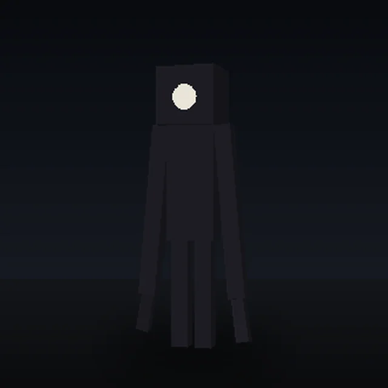
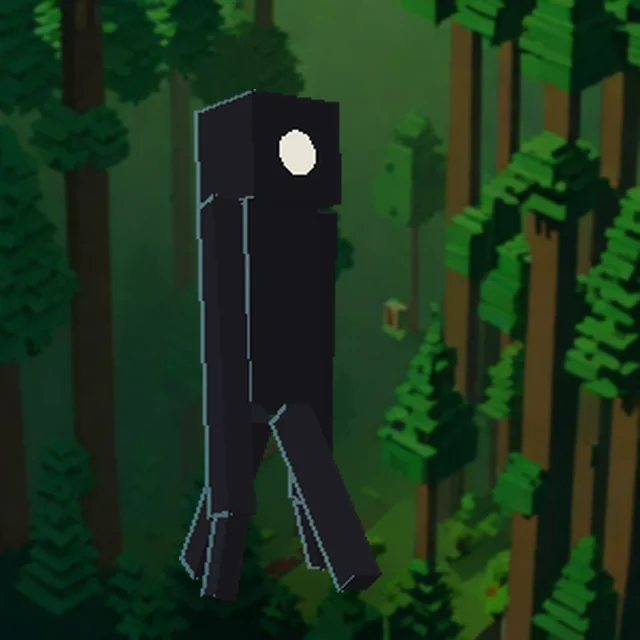
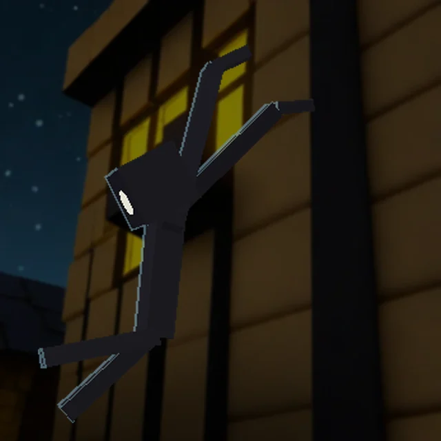
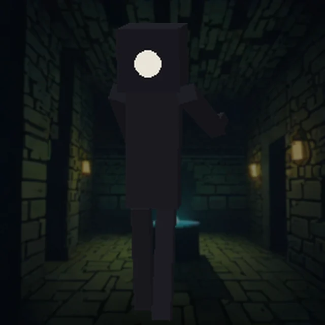
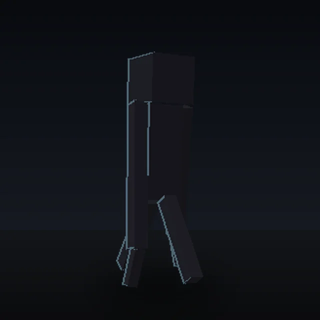
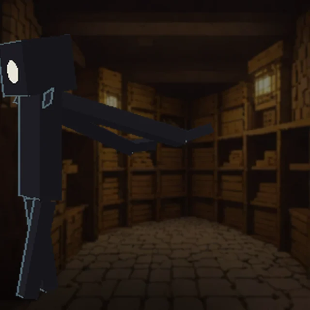
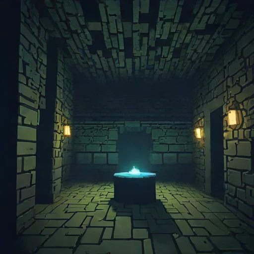

SCOPOPHOBIA
A Minecraft horror mod. Nothing happens for two days. Then it does.
What happens
| Day | What changes |
|---|---|
| 1 | Nothing. Build something. Sleep if you like. |
| 2 | The creature comes out, and only ever at night. There is only one of it, and it always knows where you are. |
| 3 | The animals turn. Cows, pigs, sheep, villagers, wolves. They come towards you and they bite. |
| 5 | Almost nothing is left alive, and the music stops. Caves, weather, your own footsteps and whatever is still breathing. That is all you get. |
| 6 | Far more of them than there should be, every night, for good. |
The creature
Thin, black, a little taller than you are, with arms that hang past its knees and claws on the end of them. No face at all except a round white mouth. It climbs walls, so a tower is not a plan. It hits for four hearts.
Two things make it worse than an ordinary mob. It has a tongue, and if you are within about twelve blocks it will catch you with it and drag you in. And if you look at it, it knows, and it starts sprinting.
It also gets through walls. Wood, glass, leaves, grass and dirt it will smash straight through. Stone, iron and obsidian stop it dead, so a stone room is still worth building and a wooden one is not.






Those are drawn straight from the model file the game loads, by
tools/render-creature.py, so they are the creature rather than an
artist's idea of it. The pictures below are the other way round: made by an
image model on a computer at home, for atmosphere.
The bunkers
Somebody was here before you and they built these. They turn up in spruce forests: a wide circle of stone bricks on the surface with iron bars round the edge, and an iron trapdoor in the middle with a ladder going down.
Down below is a round room with a great stone cylinder standing in the middle of it and four iron doors, one in each direction.
- North — the store room. Two rows of double chests, scraps of cooked food, iron tools and armour worn nearly through, and cobblestone nobody ever used.
- East — collapsed. The ceiling came down and it is full of rubble.
- West — opens straight into an enormous cave. Nobody dug that.
- South — one small room with one chest in the middle of it, and one thing inside.
It hunts as night, It tasted flesh, and now we cannot return.
It hunts at night, it tasted prey, and now we cannot return.
Giant spruces grow around every bunker — far taller than the ones the game makes on its own, with trunks four blocks thick.




Get it
Installing it on Java Edition
- Make a new world to try it in, or a copy of one. This pack runs commands and digs holes, and it can wreck a world you care about. That cannot be undone.
- Download the zip above. Do not unzip it.
- In Minecraft, open your world's folder: Singleplayer → your world → Edit → Open World Folder.
- Drop the zip into the
datapacksfolder inside it. - Load the world and run
/reload. You should see Scopophobia is loaded in the chat.
To check it is working before day 2, run /time set 14000 and then
/time add 24000 twice. The creature should turn up within a minute.
Installing it on Bedrock Edition
- Again: a new world, or a copy. Same reason.
- Download the
.mcaddonabove and open it. Minecraft takes it from there and imports both halves. - Make a world. Under Behaviour Packs turn on Scopophobia; the resource pack comes with it. If it does not, turn that on too under Resource Packs — without it the creature is invisible.
- Turn on Experimental Features if the game asks. Leave Show Coordinates on if you want to find your way back.
If Minecraft refuses the pack and says it needs a newer version, open
scopophobia_bp/manifest.json and change the
@minecraft/server version to match yours. That one number is the
usual culprit.
The two editions are not the same build
They cannot be. Java reads data packs, Bedrock reads add-ons, and nothing is shared between them. Same idea, written twice, and each one does what its own edition is good at.
| Java | Bedrock | |
|---|---|---|
| The creature | An invisible zombie with a body made of block displays stuck to it every tick | A real custom mob with its own model, texture and walking animation |
| Climbing | Faked: a check for a wall, and a shove upwards | Real. Bedrock has a climbing component, the one spiders use |
| Breaking blocks | A block tag and a setblock | A break_blocks component, the one ravagers use, plus the same check as a backup |
| The timeline | mcfunction files and scoreboards | JavaScript. Bedrock has no way to get the day number into a scoreboard, so commands alone cannot do it |
| The book | A book and quill in the chest, with the words in it | Three signs on the wall. No Bedrock command can write in a book |
| The way down | A ladder | A spiral staircase, because Bedrock writes block states differently and gets ladders wrong quietly |
What it cannot do
- Black eyes. Neither edition gets them. That needs a texture pack built on top of Minecraft's own pictures of a cow and a pig, and those have to be painted by hand. On Java the turned animals glow black round the edges instead; on Bedrock they give off a wisp of dark smoke. If you paint the eyes, the texture pack can be built round them.
- The giant spruces are planted around the bunkers rather than being a proper new biome. A new biome means changing how the world generates, and a mistake there stops the whole pack loading.
- Java's creature is a puppet. An invisible zombie with block displays dragged onto it. Its pathfinding is a zombie's — good, not clever. Bedrock's is a real mob and behaves better.
- Bedrock's chests hold whole iron rather than nearly worn out iron, because the command that fills a chest there cannot say how used up a tool is.
None of this has been tested in the game. It was written on a computer with no Minecraft on it. A checker confirms both packs are put together correctly — every function resolves, every tag exists, the model and the animation agree about which bones there are — but it cannot say whether the game likes a command. Expect the first version to need fixing. Say what went wrong and it gets fixed.
Every file in it
Both packs are just text. Nothing here is hidden — click a file and read it.